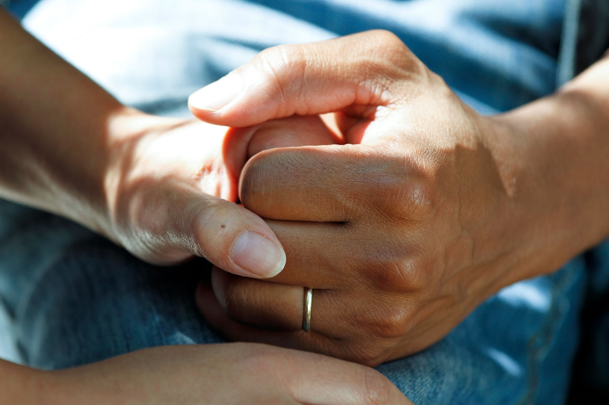
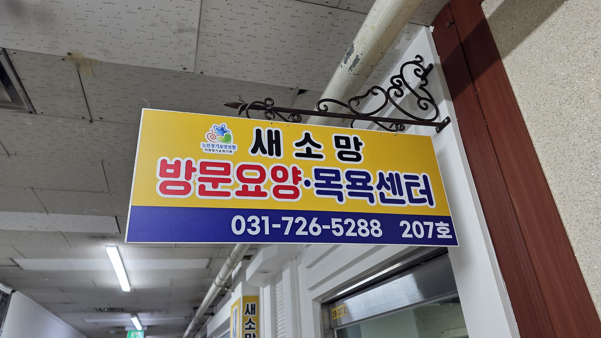

관계가 보이는 사진
정면을 보는 모델 사진보다 맞잡은 손, 눈높이를 맞춘 대화, 익숙한 집 안 풍경처럼 관계가 느껴지는 장면을 사용합니다.
Human care, thoughtfully modern
익숙한 집에서 평소의 일상을 이어갈 수 있도록. 새소망은 어르신 한 분 한 분의 속도와 마음을 살피는 방문요양을 제공합니다.
오래 머무는 돌봄은, 서로를 알아가는 데서 시작합니다.
01 · A more human homepage
돌봄 홈페이지의 첫 인상은 시설이나 기술이 아니라 사람이어야 합니다. 실제 생활의 온도, 존중받는 어르신의 표정, 가족이 안심하는 순간을 디자인의 중심에 둡니다.

정면을 보는 모델 사진보다 맞잡은 손, 눈높이를 맞춘 대화, 익숙한 집 안 풍경처럼 관계가 느껴지는 장면을 사용합니다.
“프리미엄 케어 솔루션” 같은 추상어 대신 “오늘은 어떤 하루를 보내셨나요?”처럼 보호자와 어르신이 실제로 듣고 싶은 말을 씁니다.
상담 버튼을 반복 노출하는 대신 서비스 이해 → 이용 절차 → 상담의 순서로 자연스럽게 안내합니다. 모바일에서는 전화와 상담만 하단에 고정합니다.
02 · Care that fits daily life
서비스를 작은 카드로 나누기보다 비교하기 쉬운 큰 행으로 정리합니다. 가족은 이름과 한 줄 설명을 먼저 읽고, 필요한 항목만 펼쳐볼 수 있습니다.
요양보호사가 정해진 시간에 가정을 방문해 일상생활과 정서적 안정을 돕습니다. 어르신이 스스로 할 수 있는 일은 오래 유지하도록 기다리고 격려합니다.
전문 인력이 위생 상태와 신체 컨디션을 먼저 살핀 뒤 안전하게 목욕을 돕습니다. 이동이 어려운 어르신도 익숙한 공간에서 편안하게 이용할 수 있습니다.
가족요양 가능 여부, 인정 시간, 신청 절차처럼 어려운 제도를 이해하기 쉽게 설명합니다. 현재 상황을 기준으로 실제 선택지를 함께 정리합니다.
등급 신청에 필요한 과정과 준비 사항을 순서대로 안내합니다. 이미 등급을 받은 경우에는 이용 가능한 서비스와 본인부담 범위를 확인해 드립니다.
“어머니를 돌봐주는 분을 만난 게 아니라,
성남시 중원구 · 방문요양 이용 가족
우리 가족을 이해해 주는 사람을 만났어요.”
03 · A calm first journey
전화 또는 온라인으로 지금 가장 어려운 점만 알려주세요.
가족 상황, 등급, 희망 시간과 돌봄 방식을 차분히 확인합니다.
생활 습관과 성향까지 고려해 잘 맞는 분을 연결합니다.
첫 방문 이후에도 전담 매니저가 정기적으로 살피고 조율합니다.

04 · Rooted in the neighborhood
간판의 개나리색은 버리지 않고 더 차분하고 넓게 쓸 수 있는 골드 옐로로 정돈합니다. 지역성과 친근함은 유지하고, 디지털에서는 잉크 네이비로 전문성을 보완합니다.
05 · What should change
06 · Interaction rules
브랜드 → 제목 → 설명 → 행동 순서로 80ms 간격을 두고 등장합니다. 사용자가 페이지의 우선순위를 자연스럽게 읽게 합니다.
사진은 3% 이내로 천천히 확대하고 본문은 30px 이내에서 나타납니다. 과한 패럴랙스와 자동 재생은 사용하지 않습니다.
reduced-motion 환경에서는 모든 전환을 제거하고 콘텐츠를 즉시 표시합니다. 포커스 링과 44px 이상의 클릭 영역을 유지합니다.
무엇을 신청해야 할지 몰라도 괜찮습니다. 지금 상황을 말씀해 주시면 가능한 방법부터 차근차근 안내해 드립니다.